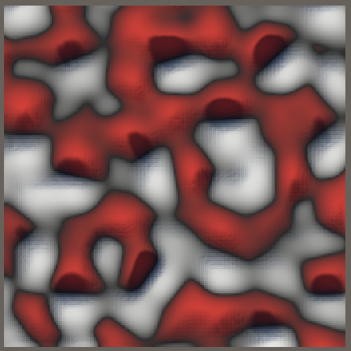

Simplex Noise
Simplexes and Radial Kernels
- Apply radially-symmetrical falloff kernels.
- Use simplexes to partition space.
- Transform squares into triangles and cubes into tetrahedra.
- Introduce circle- and sphere-based gradients.
This is the seventh tutorial in a series about pseudorandom noise. It adds support for a vectorized version of the simplex noise algorithm.
This tutorial is made with Unity 2020.3.17f1.
Simplex Value Noise
After Ken Perlin created Perlin noise he later invented another noise pattern that he named simplex noise. This type of noise uses kernel summation instead of interpolation and is based on a simplex grid instead of a hypercube grid.
In this context, a kernel can be thought of as a stamp or a mask that limits the influence of a pattern. A result is generated by adding multiple kernel samples centered at different locations together.
A simplex is the simplest possible polytope—an object with flat sides—that takes up space in all available dimensions. A straight line segment is a 1D simplex. A triangle is a 2D simplex. A square is not a 2D simplex, because it has one more corner and side than a triangle and thus isn't the simplest possible shape. A straight line segment is also not a 2D simplex, because it has only a single dimension, no matter how it is oriented in 2D space. Finally, a tetrahedron is a 3D simplex.
Simplex noise is a type of gradient noise, but we can also create value noise variants of it. We start with those because they are simpler and easier to analyze than the gradient variants.
Simplex Jobs
We cannot rely on our existing lattice structs to generate simplex noise, because they use a hypercube lattice to partition space while we need simplex lattices. So we'll create a new partial Noise class asset named Noise.Simplex and declare new simplex noise types in there, for 1D, 2D, and 3D.
Although we could create tiling simplex noise variants they won't be very useful, because the tiling would be based on the simplex lattice and thus not align with a hypercube grid. Thus 2D tiling won't match a square region and 3D tiling won't match a cube. 1D tiling would fit straight line segments so is possible, but we'll be consistent and won't support tiling for all simplex noise variants. So these noise types only need an IGradient generic type parameter. We begin by only using the gradient for the evaluation after interpolation, but pass zero to it for now.
using Unity.Mathematics;
using static Unity.Mathematics.math;
public static partial class Noise {
public struct Simplex1D<G> : INoise where G : struct, IGradient {
public float4 GetNoise4 (float4x3 positions, SmallXXHash4 hash, int frequency) {
return default(G).EvaluateAfterInterpolation(0f);
}
}
public struct Simplex2D<G> : INoise where G : struct, IGradient {
public float4 GetNoise4 (float4x3 positions, SmallXXHash4 hash, int frequency) {
return default(G).EvaluateAfterInterpolation(0f);
}
}
public struct Simplex3D<G> : INoise where G : struct, IGradient {
public float4 GetNoise4 (float4x3 positions, SmallXXHash4 hash, int frequency) {
return default(G).EvaluateAfterInterpolation(0f);
}
}
}
Add entries for simplex value noise and simplex value turbulence noise to the enum in NoiseVisualization.
public enum NoiseType {
Perlin€, PerlinTurbulence, Value€, ValueTurbulence,
SimplexValue, SimplexValueTurbulence,
VoronoiWorleyF1, VoronoiWorleyF2, VoronoiWorleyF2MinusF1,
VoronoiChebyshevF1, VoronoiChebyshevF2, VoronoiChebyshevF2MinusF1
}
And insert them into the job array at the appropriate location. The simplest way to not support tiling variants is to use the non-tiling variants for those elements, so each variant gets included twice.
{
Job<Simplex1D<Value>>.ScheduleParallel,
Job<Simplex1D<Value>>.ScheduleParallel,
Job<Simplex2D<Value>>.ScheduleParallel,
Job<Simplex2D<Value>>.ScheduleParallel,
Job<Simplex3D<Value>>.ScheduleParallel,
Job<Simplex3D<Value>>.ScheduleParallel
},
{
Job<Simplex1D<Turbulence<Value>>>.ScheduleParallel,
Job<Simplex1D<Turbulence<Value>>>.ScheduleParallel,
Job<Simplex2D<Turbulence<Value>>>.ScheduleParallel,
Job<Simplex2D<Turbulence<Value>>>.ScheduleParallel,
Job<Simplex3D<Turbulence<Value>>>.ScheduleParallel,
Job<Simplex3D<Turbulence<Value>>>.ScheduleParallel
},
1D Simplexes and Kernels
We begin with 1D Simplex noise. It uses the same line-segment space partition as regular value noise, but we don't have an ILattice type to generate the required data. Instead, we find the first lattice point x0 inside Simplex1D.GetNoise4 directly, first by applying the frequency to the positions and then flooring the X coordinates.
public struct Simplex1D<G> : INoise where G : struct, IGradient {
public float4 GetNoise4 (float4x3 positions, SmallXXHash4 hash, int frequency) {
positions *= frequency;
int4 x0 = (int4)floor(positions.c0);
return default(G).EvaluateAfterInterpolation(0f);
}
}
To generate the noise value we need a kernel. For 1D noise the kernel requires evaluation of a hash and 1D gradient input. We add a static Kernel method to Simplex1D to do this, based on a hash, a lattice point, and the sample position, all vectorized. Just like for Lattice1D, the gradient input is found by subtracting the lattice points from their X coordinates.
public struct Simplex1D<G> : INoise where G : struct, IGradient {
public float4 GetNoise4 (float4x3 positions, SmallXXHash4 hash, int frequency) {
…
}
static float4 Kernel (SmallXXHash4 hash, float4 lx, float4x3 positions) {
float4 x = positions.c0 - lx;
return default(G).Evaluate(hash, x);
}
}
To apply the kernel for the first lattice point, invoke it inside GetNoise4, passing it the hash fed with the point, the point itself, and the positions. Pass its result to the final evaluation.
public float4 GetNoise4 (float4x3 positions, SmallXXHash4 hash, int frequency) {
positions *= frequency;
int4 x0 = (int4)floor(positions.c0);
return default(G).EvaluateAfterInterpolation(
Kernel(hash.Eat(x0), x0, positions)
);
}
To complete the 1D noise we have to include the second point x1 of the lattice span as well, one step further along the X axis. And because Simplex noise sums kernels, add its kernel to the first one, instead of interpolating them.
public float4 GetNoise4 (float4x3 positions, SmallXXHash4 hash, int frequency) {
positions *= frequency;
int4 x0 = (int4)floor(positions.c0), x1 = x0 + 1;
return default(G).EvaluateAfterInterpolation(
Kernel(hash.Eat(x0), x0, positions) + Kernel(hash.Eat(x1), x1, positions)
);
}
Radially-symmetrical Falloff
At this point we're simply adding the uniform lattice values of value noise and using those constant values for the entire span. To turn this into a continuous pattern we have to introduce a smooth transition from one lattice point to the next. While regular lattice noise blends between lattice points via interpolation, simplex noise does this by limiting the influence of each lattice point. This is the job of the kernel. It defines a falloff function that starts at 1 at the lattice point and drops to zero when it reaches the adjacent lattice points, in both directions. Hence it is a symmetrical kernel, which in a single dimension also makes it radially-symmetrical.
The simplest falloff function `f` that works is one minus the absolute distance along the single dimension: `f(x)=1-|x|`. This function starts at 1 and drops to zero at the adjacent lattice points. Use it to scale the gradient evaluation.
static float4 Kernel (SmallXXHash4 hash, float4 lx, float4x3 positions) {
float4 x = positions.c0 - lx;
float4 f = 1f - abs(x);
return f * default(G).Evaluate(hash, x);
}
The result is continuous noise, but it is equivalent to simple linear interpolation and thus isn't smooth. To make regular value noise smooth we needed to use a C2-continuous interpolation. Likewise, we need to find a C2-continuous falloff function to make simplex value noise meet the same standards.
Let's start with the observation that `|x|=sqrt(x^2)` and thus that the simplest way to adjust our falloff function is to eliminate the square root. This leads to `f(x)=1-x^2`.
float4 f = 1f - x * x;
This squared falloff introduces curvature but is obviously not C2-continuous yet. This makes sense because the first derivative is `f'(x)=-2x` and the second derivative is `f''(x)=-2`. Neither of these are zero at the end points, where `x` equals 1 or −1.
Another observation that we can make is that in the middle of a span the noise can end up with an amplitude that exceeds 1. This happens because at the halfway point `f(1/2)=1-(1/2)^2=1-1/4=3/4`. That is the maximum for a single kernel, but we add two, so the total maximum amplitude is `2f(1/2)=3/2=1.5`.
Let's make this more obvious by only using the falloff factor for the kernel result, thus always visualizing the maximum possible amplitude of the noise.
return f;// * default(G).Evaluate(hash, x);
We can modify the falloff function that we currently have by squaring it, which leads to `f(x)=(1-x^2)^2 ` with derivatives `f'(x)=4x^3-4x` and `f''(x)=12x^2-4`. This function is C1- but not C2-continuous.
To reach C2-continuity we have to raise the power of the function one step higher, cubing instead of squaring it: `f(x)=(1-x^2)^3` with derivatives `f'(x)=-6x^5+12x^3-6x` and `f''(x)=-30x^4+36x^2-6`.
The second derivative of this function isn't zero at the lattice point itself, because that's where the kernel falloff switches direction. As the kernel influences both sides this isn't a problem, it only has to reach zero at its edges.
Apply this falloff to our kernel.
float4 f = 1f - x * x; f = f * f * f; return f;// * default(G).Evaluate(hash, x);
Note that—unlike 1D regular value noise—the maximum amplitude of 1D simplex value noise isn't constant. It wobbles a bit, reaching 1 at lattice points and dropping to its minimum of 0.84375 in the middle of each span.
Finally, complete 1D simplex value noise by reintroducing the gradient evaluation.
return f * default(G).Evaluate(hash, x);
Compared to regular value noise, the simplex variant is a bit more wobbly due to its variable maximum amplitude. Besides that both show the same pattern as they're based on the same line-segment lattice.
Renaming
At this point we're using the IGradient.EvaluateAfterInterpolation method to adjust the final combined noise value both after interpolation of lattice noise and after kernel summation of simplex noise. Its current name is thus too specific. Let's refactor rename all relevant code so it becomes IGradient.EvaluateCombined. I only show the change for the IGradient interface.
public interface IGradient {
…
float4 EvaluateCombined (float4 value);
}
2D Kernels
Moving on to 2D noise, the falloff function of a radially-symmetrical kernel works the same as for 1D. We again subtract the square distance from 1 and cube that. In general the falloff function is `f(d)=(1-d)^3` where `d` is the square distance. For 1D `d=x^2` and for 2D `d=x^2+z^2`, because we base our 2D noise on the XZ plane. Thus for 2D the falloff function can be defined as `f(x,z)=(1-x^2-z^2)^3` Add a Kernel method to Simplex2D with this falloff as its result.
public struct Simplex2D<G> : INoise where G : struct, IGradient {
…
static float4 Kernel (
SmallXXHash4 hash, float4 lx, float4 lz, float4x3 positions
) {
float4 x = positions.c0 - lx, z = positions.c2 - lz;
float4 f = 1f - x * x - z * z;
f = f * f * f;
return f;
}
}
Follow that with an implementation of GetNoise4 with the same logic as for 1D, initially using the same square-based lattice as Lattice2D, but this time summing four kernels.
public float4 GetNoise4 (float4x3 positions, SmallXXHash4 hash, int frequency) {
positions *= frequency;
int4
x0 = (int4)floor(positions.c0), x1 = x0 + 1,
z0 = (int4)floor(positions.c2), z1 = z0 + 1;
SmallXXHash4 h0 = hash.Eat(x0), h1 = hash.Eat(x1);
return default(G).EvaluateCombined(
Kernel(h0.Eat(z0), x0, z0, positions) +
Kernel(h0.Eat(z1), x0, z1, positions) +
Kernel(h1.Eat(z0), x1, z0, positions) +
Kernel(h1.Eat(z1), x1, z1, positions)
);
}
The result is a square grid filled with circular gradients that indicate the maximum amplitude of the noise. Although the maximum amplitude should be 1 at the lattice points this is currently not the case, because the kernel centered on the diagonally opposite corner has become negative as its distance has exceeded 1: `f(1,1)=(1-1-1)^3=-1^3=-1`. We fix this by eliminating negative falloff results.
static float4 Kernel (
SmallXXHash4 hash, float4 lx, float4 lz, float4x3 positions
) {
…
return max(0f, f);
}
With our kernel influence clamped we see the result of kernel summation while using a square lattice. The next step is to switch to a triangular lattice.
2D Simplexes
A 2D simplex is a triangle. It is possible to tile 2D space with a grid of equilateral triangles. We can start with our existing square-based approach and convert it into a triangular lattice using a two-step process. We take a square and scale it down along the XZ diagonal. This distorting operation is known as a skew. The result is a rhombus, which when split along its XZ diagonal becomes two triangles with opposite orientations. If we apply the correct skew the end result is a grid of equilateral triangles.
The skew is performed by moving all points along the XZ diagonal line. We do this by applying the same adjustment to both coordinates of each point. To convert from square to rhombus we have to scale down, so we have to subtract some skew value `s`. So for every point we have to apply the transformation `[[x],[z]]->[[x-s],[z-s]]`.
To create a rhombus `s` cannot be the same for all points, so it depends on their coordinates, which means that it has to be a function: `s(x,z)`. We have to determine what it is.
Let's consider the case of a degenerate rhombus: we skew so all points end up on a single line. Let's also consider the square with corner points `[[0],[0]]`, `[[1],[0]]`, `[[1],[1]]`, and `[[0],[1]]`.
From this we can see that `s(0,0)=0`, because the point at the origin doesn't move. The other point on the XZ line also ends up at the origin, so `s(1,1)=1`. And `s(0,1)=s(1,0)=1/2`. Thus in this case `s(x,z)=(x+z)/2`. In general we have `s(x,z)=v(x+z)` where the constant value `v` determines the shape of the rhombus. We have to determine which value to use for `v` so we end up with equilateral triangles.
Let's look at the bottom right triangle of the original square, with corners `a=[[0],[0]]`, `b=[[1],[0]]` and `c=[[1],[1]]`.
After skewing `a` is still the same, but the other two corner points have changed. We have `b=[[1-v(1+0)],[-v(1+0)]]=[[1-v],[-v]]` and `c=[[1-v(1+1)],[1-v(1+1)]]=[[1-2v],[1-2v]]`.
We do not yet know what `v` is, but we do know that the three sides of the triangle have the same length, so we can equate them. As `a` sits at the origin the distance from it to `b` and to `c` is equal to the length of the vectors that they define. So the length of those two vectors are equal: `||b||=||c||`, and thus their square lengths are also equal: `||b||^2=||c||^2`.
The square length of a 2D vector is `x^2+z^2`. Thus `||b||^2=(1-v)^2+(-v)^2=2v^2-2v+1` and `||c||^2=2(1-2v)^2=8v^2-8v+2`. Now we can solve the equation and find `v=(3-sqrt(3))/6`.
At this point we know how to convert from squares to triangles, but we have already declared that we are using a triangular lattice, that is our starting point. To find the lattice points we have to convert the other way, from triangles to squares. This requires moving all points along the same XZ diagonal, but now in the opposite direction—adding instead of subtracting the skew—so we have `[[x],[z]]->[[x+v(x+z)],[z+v(x+z)]]` where `v` is a different skew value that we have to find.
Let's consider the transformation for point `c`. We know that it has to end up at `[[1],[1]]` and `x=z` thus `x+2vx=1`. We also know that `x=1-2(3-sqrt(3))/6=1-(3-sqrt(3))/3=sqrt(3)/3=1/sqrt(3)`. This leads to `1/sqrt(3)+(2v)/sqrt(3)=1` and we find `v=(sqrt(3)-1)/2`.
Now we have two skew values: `(3-sqrt(3))/6` to convert from squares to triangles and `(sqrt(3)-1)/2` to convert from triangles to squares. To find the lattice points we have to apply the latter in GetNoise4, and then use the skewed coordinates to determine the lattice points.
positions *= frequency; float4 skew = (positions.c0 + positions.c2) * ((sqrt(3f) - 1f) / 2f); float4 sx = positions.c0 + skew, sz = positions.c2 + skew; int4 x0 = (int4)floor(sx), x1 = x0 + 1, z0 = (int4)floor(sz), z1 = z0 + 1;
This creates the correct lattice but messes up the kernels, because they are now calculated based on the skewed coordinates. We have to un-skew the square lattice points back to the triangles in Kernel to calculate them in the original space. For this we use the other skew value and subtract the skew from the lattice coordinates before subtracting them from the original coordinates. This is equivalent to adding the skew after the existing subtraction.
float4 unskew = (lx + lz) * ((3f - sqrt(3f)) / 6f); float4 x = positions.c0 - lx + unskew, z = positions.c2 - lz + unskew; float4 f = 1f - x * x - z * z;
This fixes the kernel shapes but the result is blown-out white. The problem is that our kernel influence extends too far, because the triangles are smaller than the squares. The falloff should reach zero at the midpoint of the edge opposite to the corner it is centered on. We can do this by reducing the starting strength of the kernel to 0.5.
float4 f = 0.5f - x * x - z * z;
The kernels now have the correct shape and size but they are very weak, because at their center `f(0,0)=(1/2)^3=1/8`. This is fixed by scaling up the falloff to compensate: `f(x,z)=8(1/2-x^2-z^2)^3`.
f = f * f * f * 8f;
In this case we can find two different amplitude minima: those at the midpoints along the edges and the one at the center of each triangle. The edge minimum is `m_e=16/27~~0.593` and the center minimum is `m_c=1000/1944~~0.514`.
Although our lattice and kernels are now finished, due to the skewing the simplex noise variant appears to have a higher frequency compared to the square-based version. Although this isn't a problem on its own, it makes comparing the different noise variants harder. So let's scale down the frequency, dividing it by √3 at the start of GetNoise4.
positions *= frequency * (1f / sqrt(3f);
We finish 2D simplex value noise by including the gradient evaluation.
return max(0f, f) * default(G).Evaluate(hash, x, z);

Compared to regular value noise, the simplex variant distorts the noise pattern to fit what appears like a honeycomb lattice. It is also weaker. The pattern difference is most obvious when comparing the turbulence variants.


Only Three Kernels
Although our 2D simplex value noise is visually finished, we are currently still ignoring that each triangle requires only three kernels. We can verify this by looking at the four kernels that we currently use in isolation.


Kernels 00 and 11—those along the XZ diagonal—contribute to every triangle, while the other kernels only influence half of the triangles. So we can always skip either the 01 or the 10 kernel. Let's begin by removing both from GetNoise4.
return default(G).EvaluateCombined( Kernel(h0.Eat(z0), x0, z0, positions) +//Kernel(h0.Eat(z1), x0, z1, positions) +//Kernel(h1.Eat(z0), x1, z0, positions) +Kernel(h1.Eat(z1), x1, z1, positions) );
Which third kernel is needed depends on which side of the XZ diagonal the sample point lies, in the skewed square lattice space. If we're on the side where the relative X coordinate is greater than the Z coordinate then we need the 10 kernel and otherwise the 01 kernel.

This is a vectorized decision that applies to the selection of the appropriate X and Z lattice points. Store whether the relative skewed X exceed Z in a bool4 variable directly after finding the lattice points.
float4 sx = positions.c0 + skew, sz = positions.c2 + skew; int4 x0 = (int4)floor(sx), x1 = x0 + 1, z0 = (int4)floor(sz), z1 = z0 + 1; bool4 xGz = sx - x0 > sz - z0; SmallXXHash4 h0 = hash.Eat(x0), h1 = hash.Eat(x1);
If X is greater than Z then select x1 and z0, otherwise select x0 and z1. Let's keep track of our choices via xC and zC.
bool4 xGz = sx - x0 > sz - z0; int4 xC = select(x0, x1, xGz), zC = select(z1, z0, xGz);
This allows us to add the variable third kernel to our sum.
return default(G).EvaluateCombined( Kernel(h0.Eat(z0), x0, z0, positions) + Kernel(h1.Eat(z1), x1, z1, positions) + Kernel(hash.Eat(xC).Eat(zC), xC, zC, positions) );
While this works it requires us to feed an X lattice point to the hash, which we have already done for both options. Ideally we could select either h0 or h1, but we cannot use the existing select methods because that would result in a premature hash avalanche. So let's add a public static SmallXXHash4.Select method that selects the appropriate accumulator without change.
public static SmallXXHash4 Select (SmallXXHash4 a, SmallXXHash4 b, bool4 c) => math.select(a.accumulator, b.accumulator, c);
Now we can reuse a partially-fed hash for the third kernel in Simplex2D.GetNoise4.
SmallXXHash4 h0 = hash.Eat(x0), h1 = hash.Eat(x1), hC = SmallXXHash4.Select(h0, h1, xGz); return default(G).EvaluateCombined( Kernel(h0.Eat(z0), x0, z0, positions) + Kernel(h1.Eat(z1), x1, z1, positions) + Kernel(hC.Eat(zC), xC, zC, positions) );
3D Simplices
Generating the 3D simplex lattice works the same as for 2D, but with an extra dimension. So instead of turning a square into a rhombus we turn a cube into a rhombohedron. The transformation is `[[x],[y],[z]]->[[x-v(x+y+z)],[y-v(x+y+z)],[z-v(x+y+z)]]` with `v` yet unknown.

And instead of splitting a square into two triangles we split a cube into six tetrahedra by selecting their corners in the following way: start with the 000 corner, then pick one of the three adjacent corners with a single 1, then pick one of the two adjacent corners with two 1s, and finish with 111. This can be done in six unique ways, resulting in six tetrahedra of the same shape that fill the cube.

We begin by copying the Simplex2D.Kernel method to Simplex3D and adjusting it to work for three dimensions. As we don't know the un-skew factor yet we'll set it to zero and use the same falloff start and scale as for 2D. Again we initially only show the falloff function, leaving the gradient evaluation for later.
public struct Simplex3D<G> : INoise where G : struct, IGradient {
…
static float4 Kernel (
SmallXXHash4 hash, float4 lx, float4 ly, float4 lz, float4x3 positions
) {
float4 unskew = (lx + ly + lz) * 0f;
float4
x = positions.c0 - lx + unskew,
y = positions.c1 - ly + unskew,
z = positions.c2 - lz + unskew;
float4 f = 0.5f - x * x - y * y - z * z;
f = f * f * f * 8f;
return max(0f, f);
}
}
The 3D version of GetNoise uses the same approach as the 2D version. This time we begin with the original frequency, leave the skew factor at zero, and only include the 000 and 111 kernels. As they lie on the XYZ diagonal they'll be part of every tetrahedron, while the other two kernels are variable.
public float4 GetNoise4 (float4x3 positions, SmallXXHash4 hash, int frequency) {
positions *= frequency;
float4 skew = (positions.c0 + positions.c1 + positions.c2) * 0f;
float4
sx = positions.c0 + skew,
sy = positions.c1 + skew,
sz = positions.c2 + skew;
int4
x0 = (int4)floor(sx), x1 = x0 + 1,
y0 = (int4)floor(sy), y1 = y0 + 1,
z0 = (int4)floor(sz), z1 = z0 + 1;
SmallXXHash4
h0 = hash.Eat(x0), h1 = hash.Eat(x1);
return default(G).EvaluateCombined(
Kernel(h0.Eat(y0).Eat(z0), x0, y0, z0, positions) +
Kernel(h1.Eat(y1).Eat(z1), x1, y1, z1, positions)
);
}
To find the skew factor `v` we'll look at the tetrahedron with corners `a=[[0],[0],[0]]`, `b=[[1],[0],[0]]`,`c=[[1],[0],[1]]`, and `d=[[1],[1],[1]]`.
Just like for the triangle we'll find `v` by equating the square lengths of of the edges of the skewed `b`, `c`, and `d` vectors.This leads to a skew factor of ⅓.
float4 skew = (positions.c0 + positions.c1 + positions.c2) * (1f / 3f);
And an un-skew factor of ⅙.
static float4 Kernel (
SmallXXHash4 hash, float4 lx, float4 ly, float4 lz, float4x3 positions
) {
float4 unskew = (lx + ly + lz) * (1f / 6f);
…
}

What we get is a lattice based on groups of six tetrahedra that have the same shape but different orientations. Each tetrahedron has four edges with length √¾ and two edges with length 1.

We again scale the frequency to make it easier to compare noise variants. In this case the scale factor is 0.6.
public float4 GetNoise4 (float4x3 positions, SmallXXHash4 hash, int frequency) {
positions *= frequency * 0.6f;
…
}

In order for the falloff function to be correct it should reach zero when it reaches the tetrahedron face opposite to the corner it is centered on. This distance is √½, so our current falloff function is already correct.
Four Kernels
A tetrahedron has four corners, so we need to select two more kernels. Which kernels are needed can be decided in a similar way that we found the variable kernel in 2D, but now in three dimensions. We do this by walking along the edges of the cubes depending on which relative coordinates are greatest. If X is greater than both Y and Z then we go from corner 000 to 100. After that we go to 110 if Y is greater than Z, otherwise to 101. Each tetrahedron has a similar pattern.

To do this we can suffice with checking three comparisons: whether X is greater than Y, whether X is greater than Z, and whether Y is greater than Z.
int4 x0 = (int4)floor(sx), x1 = x0 + 1, y0 = (int4)floor(sy), y1 = y0 + 1, z0 = (int4)floor(sz), z1 = z0 + 1; bool4 xGy = sx - x0 > sy - y0, xGz = sx - x0 > sz - z0, yGz = sy - y0 > sz - z0;
With these three boolean checks we can construct a truth table that contains a row for all eight possible combinations. For each row we can also write down the first and second kernel offset per dimension, either zero or one.
| x>y | x>z | y>z | X | Y | Z |
|---|---|---|---|---|---|
| T | T | T | 1 1 | 0 1 | 0 0 |
| T | T | F | 1 1 | 0 0 | 0 1 |
| T | F | T | 0 1 | 0 0 | 1 1 |
| T | F | F | 0 1 | 0 0 | 1 1 |
| F | T | T | 0 1 | 1 1 | 0 0 |
| F | T | F | 0 0 | 0 1 | 1 1 |
| F | F | T | 0 0 | 1 1 | 0 1 |
| F | F | F | 0 0 | 0 1 | 1 1 |
Because we cannot branch in our vectorized code we have to convert this to independent selection criteria for the first and second offsets per dimension. We'll keep track of whether the first X offset is 1 with an xA boolean variable and use xB for the second X offset. We'll use similar variables for Y and Z. Then we convert the truth table to boolean expressions and use those to set the variables. Note that we have to use the & operator for vectorized boolean AND, rather than the usual && operator.
bool4 xGy = sx - x0 > sy - y0, xGz = sx - x0 > sz - z0, yGz = sy - y0 > sz - z0; bool4 xA = xGy & xGz, xB = xGy | (xGz & yGz), yA = !xGy & yGz, yB = !xGy | (xGz & yGz), zA = (xGy & !xGz) | (!xGy & !yGz), zB = !(xGz & yGz);
Use these to find the lattice point choices for the variable kernels.
bool4 xA = xGy & xGz, xB = xGy | (xGz & yGz), yA = !xGy & yGz, yB = !xGy | (xGz & yGz), zA = (xGy & !xGz) | (!xGy & !yGz), zB = !(xGz & yGz); int4 xCA = select(x0, x1, xA), xCB = select(x0, x1, xB), yCA = select(y0, y1, yA), yCB = select(y0, y1, yB), zCA = select(z0, z1, zA), zCB = select(z0, z1, zB);
Then add the missing kernels to the sum. In this case we can reuse the fed kernels for both choices of X.
SmallXXHash4 h0 = hash.Eat(x0), h1 = hash.Eat(x1), hA = SmallXXHash4.Select(h0, h1, xA), hB = SmallXXHash4.Select(h0, h1, xB); return default(G).EvaluateCombined( Kernel(h0.Eat(y0).Eat(z0), x0, y0, z0, positions) + Kernel(h1.Eat(y1).Eat(z1), x1, y1, z1, positions) + Kernel(hA.Eat(yCA).Eat(zCA), xCA, yCA, zCA, positions) + Kernel(hB.Eat(yCB).Eat(zCB), xCB, yCB, zCB, positions) );

The resulting kernel pattern looks similar to the 2D simplex lattice, but it has some variability due to its 3D nature and it not being aligned with the XZ plane. In this case we can find multiple different amplitude minima: at the midpoint of the short edges `m_s=125/256~~0.488`, at the midpoint of the long edges `m_l=1/4=0.25`, at the circumcenter of triangles `m_c=1029/4026~~0.256`, and at the circumcenter of the tetrahedron `m_t=27/128~~0.211`.
The variability is easier to see at higher frequencies.
There is a noticeable diagonal pattern. This is a consequence of the 3D skew, as the distance in the Z dimension of lattice points to the sample plane varies. The pattern depends on the orientation of the 2D slice. For example, compare no rotation with a 45° domain rotation in a single dimension.


Another interesting domain rotation is 45° around both X and Y, which aligns the slice such that we look straight down the XYZ line.

Finally, we complete 3D simplex value noise by inserting the gradient evaluation.
return max(0f, f) * default(G).Evaluate(hash, x, y, z);


Simplex Gradient Noise
To generate simplex gradient noise we need appropriate gradient vectors. We already have the Perlin struct type, but we based it on square and octahedron shapes. We did this because it worked well with the square and cube lattices and avoided vector normalization. However, the simplex lattices aren't axis-aligned and thus we'll need to use circle- and sphere-based gradients for simplex noise.
Base Gradients
The only difference between the square and circle and also between octahedron and sphere is whether their vectors are normalized. So rather than duplicate the vector-generating code we'll put it in a nested static Noise.BaseGradients class. Let's also do this for the line gradient and start with that, introducing a BaseGradients.Line method and use it in Perlin.
public struct Perlin : IGradient {
public float4 Evaluate (SmallXXHash4 hash, float4 x) =>
//(1f + hash.Floats01A) * select(-x, x, ((uint4)hash & 1 << 8) == 0);
BaseGradients.Line(hash, x);
…
}
public static class BaseGradients {
public static float4 Line (SmallXXHash4 hash, float4 x) =>
(1f + hash.Floats01A) * select(-x, x, ((uint4)hash & 1 << 8) == 0);
}
Then give BaseGradients private methods that generate and return the square- or octahedron-based vectors, given a hash.
static float4x2 SquareVectors (SmallXXHash4 hash) {
float4x2 v;
v.c0 = hash.Floats01A * 2f - 1f;
v.c1 = 0.5f - abs(v.c0);
v.c0 -= floor(v.c0 + 0.5f);
return v;
}
static float4x3 OctahedronVectors (SmallXXHash4 hash) {
float4x3 g;
g.c0 = hash.Floats01A * 2f - 1f;
g.c1 = hash.Floats01D * 2f - 1f;
g.c2 = 1f - abs(g.c0) - abs(g.c1);
float4 offset = max(-g.c2, 0f);
g.c0 += select(-offset, offset, g.c0 < 0f);
g.c1 += select(-offset, offset, g.c1 < 0f);
return g;
}
Use these methods to implement Square, Circle, Octahedron, and Sphere€ gradient methods, without any scaling.
public static float4 Square (SmallXXHash4 hash, float4 x, float4 y) {
float4x2 v = SquareVectors(hash);
return v.c0 * x + v.c1 * y;
}
public static float4 Circle (SmallXXHash4 hash, float4 x, float4 y) {
float4x2 v = SquareVectors(hash);
return (v.c0 * x + v.c1 * y) * rsqrt(v.c0 * v.c0 + v.c1 * v.c1);
}
public static float4 Octahedron (
SmallXXHash4 hash, float4 x, float4 y, float4 z
) {
float4x3 v = OctahedronVectors(hash);
return v.c0 * x + v.c1 * y + v.c2 * z;
}
public static float4 Sphere€ (SmallXXHash4 hash, float4 x, float4 y, float4 z) {
float4x3 v = OctahedronVectors(hash);
return
(v.c0 * x + v.c1 * y + v.c2 * z) *
rsqrt(v.c0 * v.c0 + v.c1 * v.c1 + v.c2 * v.c2);
}
Then use the Square and Octahedron methods in Perlin, applying the appropriate scaling there.
public float4 Evaluate (SmallXXHash4 hash, float4 x, float4 y) => BaseGradients.Square(hash, x, y) * (2f / 0.53528f); public float4 Evaluate (SmallXXHash4 hash, float4 x, float4 y, float4 z) => BaseGradients.Octahedron(hash, x, y, z) * (1f / 0.56290f);
Simplex Gradients
Now we can create a Simplex gradient type that uses the line, circle, and sphere base gradients. We leave them unscaled for now.
public struct Simplex : IGradient {
public float4 Evaluate (SmallXXHash4 hash, float4 x) =>
BaseGradients.Line(hash, x);
public float4 Evaluate (SmallXXHash4 hash, float4 x, float4 y) =>
BaseGradients.Circle(hash, x, y);
public float4 Evaluate (SmallXXHash4 hash, float4 x, float4 y, float4 z) =>
BaseGradients.Sphere€(hash, x, y, z);
public float4 EvaluateCombined (float4 value) => value;
}
To be able to visualize the simplex gradient noise variants, add entries for them to NoiseVisualization.NoiseType.
public enum NoiseType {
Perlin€, PerlinTurbulence, Value€, ValueTurbulence,
Simplex€, SimplexTurbulence, SimplexValue, SimplexValueTurbulence,
VoronoiWorleyF1, VoronoiWorleyF2, VoronoiWorleyF2MinusF1,
VoronoiChebyshevF1, VoronoiChebyshevF2, VoronoiChebyshevF2MinusF1
}
Also add them to the job array, at the appropriate location.
{
Job<Simplex1D<Simplex>>.ScheduleParallel,
Job<Simplex1D<Simplex>>.ScheduleParallel,
Job<Simplex2D<Simplex>>.ScheduleParallel,
Job<Simplex2D<Simplex>>.ScheduleParallel,
Job<Simplex3D<Simplex>>.ScheduleParallel,
Job<Simplex3D<Simplex>>.ScheduleParallel
},
{
Job<Simplex1D<Turbulence<Simplex>>>.ScheduleParallel,
Job<Simplex1D<Turbulence<Simplex>>>.ScheduleParallel,
Job<Simplex2D<Turbulence<Simplex>>>.ScheduleParallel,
Job<Simplex2D<Turbulence<Simplex>>>.ScheduleParallel,
Job<Simplex3D<Turbulence<Simplex>>>.ScheduleParallel,
Job<Simplex3D<Turbulence<Simplex>>>.ScheduleParallel
},
This gives us functional simplex noise, but we still have to normalize it.
1D Simplex Noise
To normalize 1D simplex noise we have to find its unscaled maximum. Just like with Perlin noise, the maximum can only be reaches when the gradients of adjacent kernels point toward each other. Thus the maximum gradient function of a kernel can be described as `m(x)=xf(x)=x(1-x^2)^3`.
The sum of both kernels reaches its maximum at `x=1/2`. the maximum amplitude of the unscaled noise is `2m(1/2)=(3/4)^3=27/64`. But because Line produces a variable factor with a maximum of 2 we have to double the result. The normalization factor is the inverse of that: `32/27`. Include it in the 1D version of Simplex.Evaluate.
public float4 Evaluate (SmallXXHash4 hash, float4 x) => BaseGradients.Line(hash, x) * (32f / 27f);
The final result is very similar to 1D Perlin noise.
2D Simplex Noise
In two dimensions we have two candidates for the maximum, that coincide with the minima of the falloff sums: the midpoint of an edge and the center of the triangle.
The edge maximum is `(lm_e)/2=(sqrt(2)/(2sqrt(3)))(16/27)=(8sqrt(2))/(27sqrt(3))~~0.2419`.
The center maximum is `rm_c=(sqrt(2)/3)(1000/1944)=(1000sqrt(2))/5832~~0.2425`.
As the center maximum is the largest we normalize 2D simplex noise via scaling with `1/(lm_c)=5832/(1000sqrt(2))`.
public float4 Evaluate (SmallXXHash4 hash, float4 x, float4 y) => BaseGradients.Circle(hash, x, y) * (5.832f / sqrt(2f));


3D Simplex Noise
To normalize the 3D gradients we first calculate the short edge maximum `(l_sm_s)/2=(125sqrt(3))/1024~~0.2114`.
Second, the long edge maximum at its middle is `(l_lm_l)/2=1/8=0.125`. In fact, its kernels are so far apart that it has two maxima instead of one in the middle. But we don't need to calculate those because they're guaranteed to be smaller than the short edge maximum.
The face triangles and tetrahedron interior also don't have a single maximum, the kernels are too far apart. Nowhere is the short edge maximum exceeded.
Thus our normalization factor is `2/(l_sm_s)=1024/(125sqrt(3))`.
public float4 Evaluate (SmallXXHash4 hash, float4 x, float4 y, float4 z) => BaseGradients.Sphere(hash, x, y, z) * (1024f / (125f * sqrt(3f)));


Want to know when the next tutorial gets released? Keep tabs on my Patreon page!